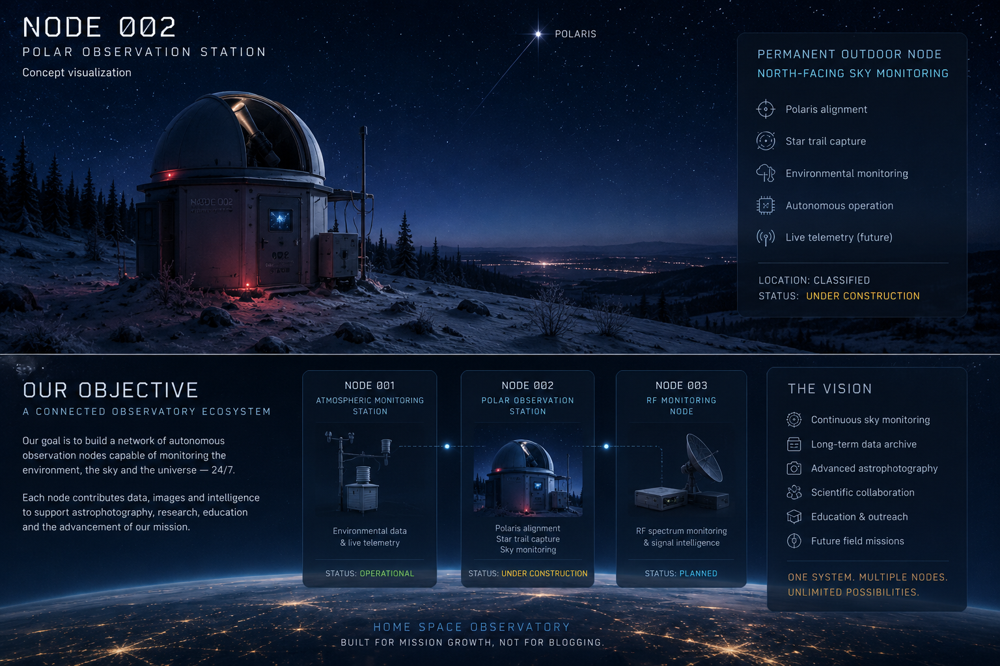

NODE 002
Polar Observation Station
Permanent outdoor observation node dedicated to Polaris alignment, long-duration sky monitoring, star trail imaging and future live night-sky telemetry integration.
Planned capabilities
Observation systems
• Polaris fixed alignment
• Long-duration exposure capture
• Star trail imaging
• Permanent sky orientation
Infrastructure
• Outdoor protected deployment
• Thermal monitoring
• UTC synchronisation
• Future live telemetry integration
Development status
NODE 002 is currently under development as a permanent outdoor observation platform designed for continuous north-facing sky monitoring.
Current work includes structural design, environmental protection, optical alignment strategy, telemetry architecture and future autonomous operation support.
Future objectives
This node will support long-term Polaris monitoring, star trail generation, sky condition reference imaging and future live observation feeds integrated into the Home Space Observatory infrastructure.
The station is planned to operate as a permanent autonomous observatory node with continuous uptime and environmental exposure handling.
Deployment placeholder

Concept placeholder for the future NODE 002 outdoor deployment platform.